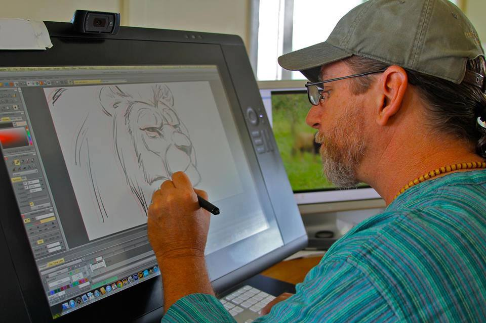

Watch our students engage in exciting activities and curriculum projects. Learn more about our academic programs and extracurricular events.
🎥 Watch Video
BTLEd major in ICT prepares students with digital teaching methods to deliver TLE lessons on programming, networking, and multimedia effectively.

Hands-on diagnostics, hardware assembly, and software repair from the program prepare fixing PCs, laptops, and peripherals efficiently.

Proficiency in design software like Photoshop and Illustrator allows producing logos, posters, and layouts for marketing or print media.

Skills in HTML, CSS, JavaScript, and web design enable building responsive sites and basic applications for small businesses or projects.

Training in digital animation tools and frame sequencing supports creating engaging visuals for videos, games, or educational content.

Coursework in troubleshooting hardware, software installation, and network basics equips graduates to resolve technical issues for users and organizations.

Skills in video editing, graphic design, and platform strategies empower producing engaging posts, vlogs, or tutorials for online audiences.

Knowledge of social media tools, SEO basics, and content management supports promoting brands online and analyzing campaign performance.

Vocational pedagogy and tech competencies fit delivering workshops on computer literacy, coding, or office applications to diverse learners.

Expertise in desktop publishing, color management, and print workflows prepares launching and operating a custom printing service.

Training in multimedia production and project coordination assists in video shoots, editing, and managing creative team workflows.

Digital organization, communication apps, and task automation skills enable remote administrative support for global clients.
This fundamental area ensures that students are not just passive users but proficient masters of digital environments. It covers everything from basic navigation to the sophisticated use of complex operating systems and file management. By building these competencies, learners gain the confidence to operate in a society that is increasingly reliant on digital interfaces. This literacy serves as the essential groundwork for all higher-level technical specializations within the field. Ultimately, these skills allow individuals to participate fully and effectively in the modern global information economy.
Students gain a deep technical understanding of the physical components that make a computer function effectively. The curriculum provides hands-on training in assembling, disassembling, and upgrading hardware parts like processors and memory modules. Alongside physical skills, learners master the correct procedures for installing operating systems and specialized application software. This dual focus ensures that a technician can handle both the "brain" and the "body" of a computing device. By the end of the module, students are capable of performing full system setups from the ground up.
This area focuses on how devices communicate with each other through local and wide area networks. Students learn to configure routers, switches, and IP addresses to create seamless data pathways between multiple users. Understanding these fundamentals is critical for maintaining the connectivity that modern businesses and households depend on daily. The training also includes setting up shared resources like printers and cloud storage within a secured environment. Mastery of networking ensures that a technician can build and maintain the digital infrastructure of any organization.
As digital threats evolve, this component teaches students how to defend systems against unauthorized access and malicious software. Learners explore the principles of encryption, strong password policies, and the regular backup of sensitive information. The curriculum emphasizes the ethical responsibility of handling data and the legal implications of privacy breaches. By instilling these habits, the program produces IT professionals who prioritize security in every task they perform. This proactive approach is the best defense against the growing global risks of identity theft and cyberattacks.
ICT challenges students to deconstruct complex technical issues into smaller, more manageable logical steps. Whether writing a script or diagnosing a system failure, learners must use a structured approach to find the most efficient solution. This mental training sharpens the ability to predict outcomes and identify patterns within digital data sets. These analytical skills are highly transferable, helping students solve problems in both technical and non-technical areas of life. Developing a logical mindset is essential for navigating the precision-oriented world of modern technology.
Students master the professional use of word processors, spreadsheets, and presentation software to handle high-level administrative tasks. The training goes beyond basic typing to include data analysis, automated formatting, and collaborative cloud-based editing. Effective digital communication is also prioritized, teaching students how to use professional email, video conferencing, and project management platforms. These tools are the standard requirement for almost every modern workplace, regardless of the specific industry. Proficiency in these applications ensures that a graduate is productive and professional from their very first day on the job.
This focuses on the diagnostic techniques required to identify and fix common technical glitches and hardware failures. Students learn to use specialized diagnostic software to monitor system health and predict potential points of failure. Regular maintenance routines, such as disk cleanup and driver updates, are taught as essential habits for prolonging device lifespan. This proactive skill set reduces downtime for businesses and saves costs on expensive emergency repairs. A technician's value is often measured by their ability to keep systems running smoothly under any circumstances.
The tech world moves at a lightning pace, so this area teaches students how to learn and integrate new tools quickly. Learners are encouraged to stay curious about trends like Artificial Intelligence, the Internet of Things, and blockchain technology. By building a strong foundational knowledge, they can easily pivot when old technologies become obsolete. This focus on adaptability ensures that a student's skills remain relevant for decades rather than just a few years. Ultimately, the program produces lifelong learners who are ready to lead the next wave of digital innovation.
This component explores how technology can be used to improve the way we teach, learn, and conduct daily commerce. Students learn to utilize Learning Management Systems (LMS) and digital tools to make information more accessible and engaging. In a business context, the curriculum covers how automation and digital record-keeping can make a company significantly more efficient. By merging technology with traditional operations, students learn to optimize workflows and reach wider audiences. This integration is the key to modernizing any traditional industry for the 21st century.
Finally, the program empowers students to turn their technical expertise into profitable independent business ventures. Learners are taught how to market their skills as freelance developers, hardware repair specialists, or IT consultants. The training includes basic concepts of digital marketing, client management, and service pricing in the tech industry. By fostering an entrepreneurial spirit, the curriculum provides a clear path to financial independence and self-reliance. This ensures that graduates have the choice to either join an established firm or build their own tech startup.
This is for images of BTLEd-ICT Activities